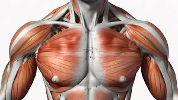

Arm :
In anatomical usage, the term arm may sometimes refer specifically to the segment between the shoulder and the elbow, while the segment between the elbow and wrist is the forearm.
In anatomical usage, the term arm may sometimes refer specifically to the segment between the shoulder and the elbow, while the segment between the elbow and wrist is the forearm.
The area of the body located between the neck and the abdomen. The chest contains the lungs, the heart, and part of the aorta. The walls of the chest are supported by the dorsal vertebrae, the ribs, and the sternum.
The human back, also called the dorsum ( PL : dorsa), is the large posterior area of the human body, rising from the top of the buttocks to the back of the neck. It is the surface of the body opposite from the chest and the abdomen.
the part of the body from the top of the thigh down to the foot, and in medical terminology, the portion of the lower extremity that runs from the knee to the ankle
The rectus abdominis muscle, (Latin: straight abdominal) also known as the "abdominal muscle" or simply the "abs", is a pair of segmented skeletal muscle on the ventral aspect of a person's abdomen (or "midriff").
Upper Arm
The upper arm includes the shoulder as well as the area between the shoulder and elbow joint. The bones of the upper arm include the
Scapula : The scapula is also called the shoulder blade. It’s a triangle-shaped flat bone that’s connected to the body by mostly muscle
Clavicle : The clavicle is also called the collarbone. Like the scapula, it attaches the arm to the torso. It also helps to distribute force
Humerus : The humerus is a long bone in the upper arm. It’s located between the scapula and the elbow joint. Many muscles and ligaments.
The upper arm also contains several joints, including the:
Forearm
The forearm is the area between the elbow joint and the wrist. Its two major bones are the radius and the ulna:
Radius : The radius is located on the side of the forearm closest to the thumb. It twists around the ulna and can change its position depending
Ulna : The ulna runs parallel to the radius. It’s on the side of the forearm that’s closest to the pinky finger. Unlike the radius, the ulna is stationary and does
Hand
FIngers : Digits that extend from the palm of the hand, the fingers make it possible for humans to grip the smallest of objects.
Palm : This is the bottom of the body of the hand.
Back : The back of the hand shows the dorsal venous network, a web of veins.
Wrist : The connection point between the arm and the hand, the wrist enables hand movements.
Pectoralis Major
The pectoralis major is the most superficial muscle in the pectoral region. It is large and fan shaped, and is composed of a sternal head and a clavicular head:
Clavicular head- originates from the anterior surface of the medial clavicle.
Sternocostal head- originates from the anterior surface of the sternum, the superior six costal cartilages and the aponeurosis of the external oblique muscle.
The distal attachment of both heads is onto the intertubercular sulcus of the humerus.
Function: Adducts and medially rotates the upper limb and draws the scapula anteroinferiorly. The clavicular head also acts individually to flex the upper limb.
Innervation: Lateral and medial pectoral nerves.

Pectoralis Minor
The pectoralis minor lies underneath its larger counterpart muscle, pectoralis major. Both muscles form part of the anterior wall of the axilla region.
Attachments: Originates from the 3rd-5th ribs and inserts into the coracoid process of the scapula.
Function: Stabilises the scapula by drawing it anteroinferiorly against the thoracic wall.
Innervation: Medial pectoral nerve.
Latissimus dorsi (lats), the largest muscle in the upper part of your body. It starts below your shoulder blades and extends to your spine in lower part
Levator scapulae, a smaller muscle that starts at the side of your neck and extends to the scapula (shoulder blade).
Rhomboids, two muscles that connect the scapula to the spine.
Trapezius (traps), which start at your neck, go across your shoulders and extend to a “V” in your lower back.
Anterior muscles :
You have four muscles in the anterior (front) part of the lower leg. They extend from your knee down to your foot. They are:
Extensor digitorum longus.
Extensor halluces longus.
Fibularis tertius.
Tibialis anterior.
Your abdominal muscles are a set of strong bands of muscles lining the walls of your abdomen (trunk of your body). They’re located toward the front of body
There are five main muscles in the abdomen:
External obliques.
Internal obliques.
Pyramidalis.
Rectus abdominis.
Transversus abdominis.